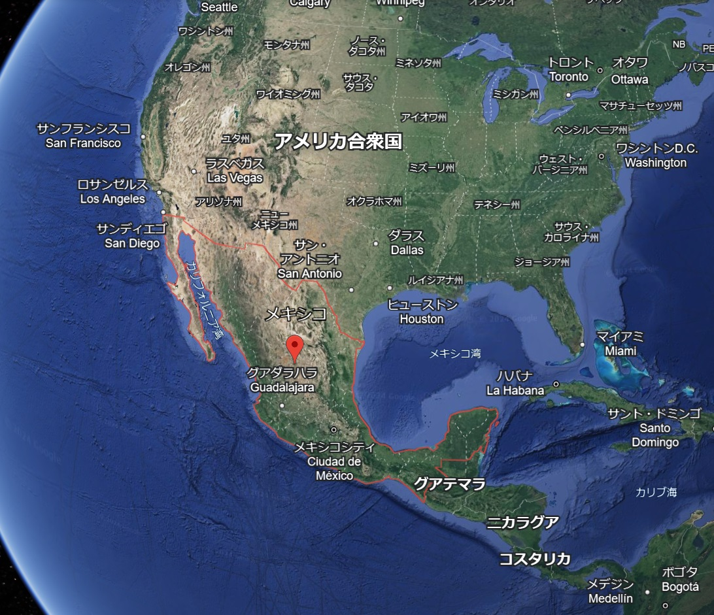
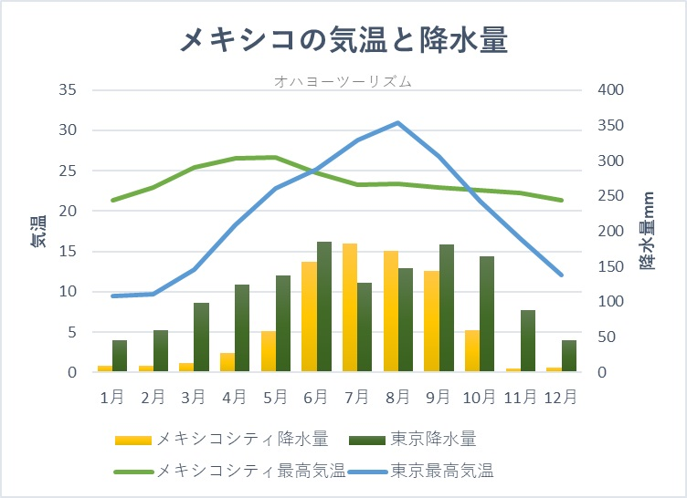
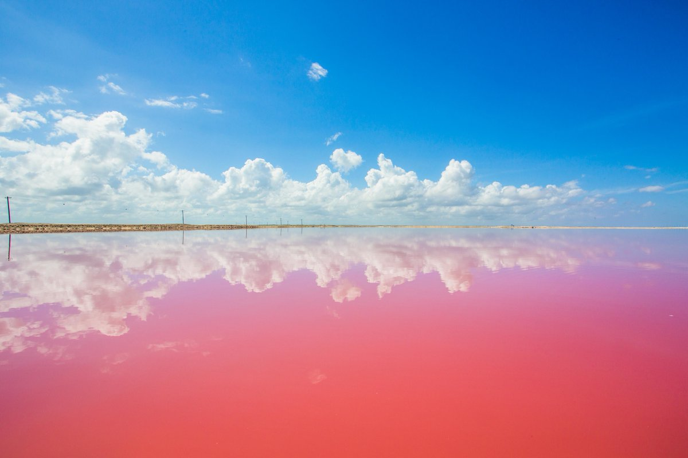
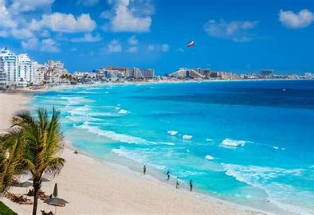
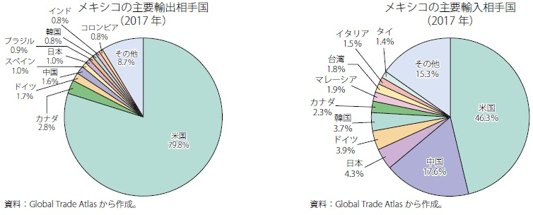
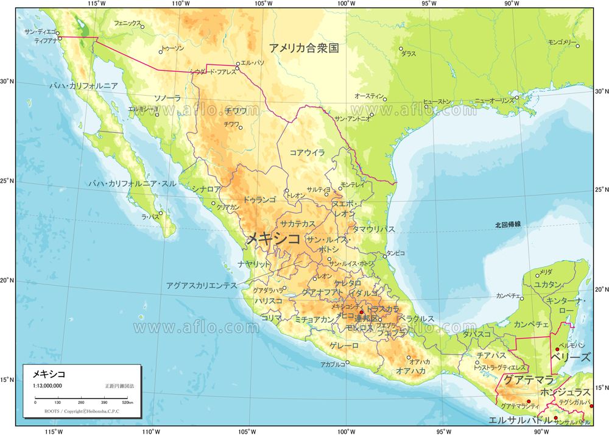
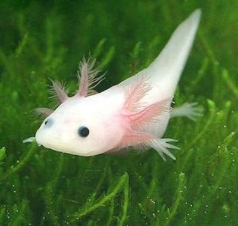

メキシコは北アメリカ南部に位置する。
北部や中央部は乾燥地帯、南部は熱帯、太平洋側は温帯気候 雨季は６月～９月で乾季は１１月～翌年の４月
ピンクラグーンはユカタン半島にある湖で、塩を採取するために造られた塩田で、 微生物と海水エビが生息することから、水がピンク色に見える。
東海岸にはリゾート地であるカンクンがある。 カンクンはカリブ海に面し、リゾートホテルが立ち並び、世界中から観光客が訪れる
最大の貿易相手国はアメリカで輸出ではの輸出額の約８０％を占めている
国土の約８５％は山脈・高原・谷が占めている。
陸の豊かさも守ろう メキシコの森林伐採のスピードは世界5位と言われており様々な目的でジャングル、マングローブ、森林が失われている。 特にメキシコ南部で多くの森林伐採が行われている。 国家森林委員会と連邦環境保護検事局は 森林の違法伐採を取り締まる活動をしている。 また、環境破壊から生物を守るため１８５の自然保護区があり、生態系を保護している
